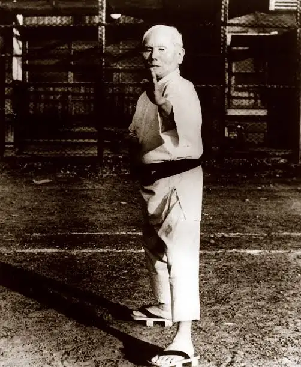
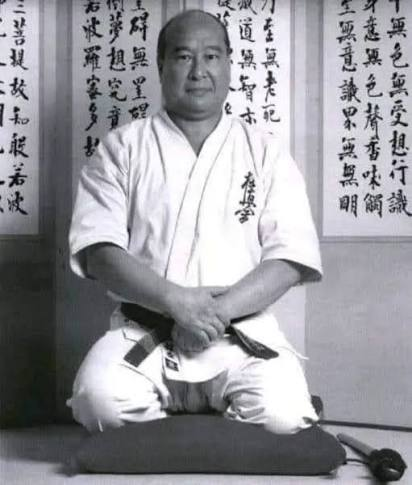
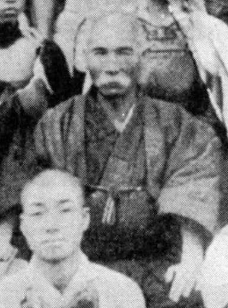
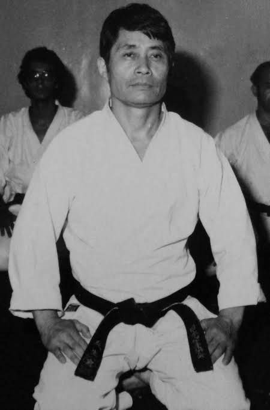
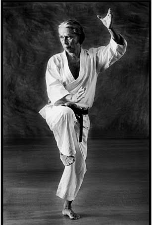

Gichin Funakoshi
Nascido em 1868, o mestre Gichin Funakoshi adaptou as técnicas de Okinawa e as levou para o Japão continental na década de 1920.

Nascido em 1868, o mestre Gichin Funakoshi adaptou as técnicas de Okinawa e as levou para o Japão continental na década de 1920.
Masutatsu Oyama, foi o criador do estilo de Karatê Kyokushinkai ou Oyama-Ryu. Hyung Yee nasceu no dia 27 de julho de 1923 em uma aldeia perto de Gunsan na Coréia Meridional. Ainda bem jovem foi enviado a China Meridional onde começou a praticar Kempo tradicional da China.


Sensei Yasutsune Itosu, ou Anko Itosu, nasceu na vila de Yamagawa, em Shuri, na ilha de Okinawa em no ano de 1831, vindo a falecer em 26 de janeiro de 1915.
Sadamu Uriu foi o Presidente Honorário da Confederação Brasileira de Caratê Shotokan e o responsável por introduzir o caratê no Brasil. Ele representou a Japan Karate Shotorenmei, organização de Tetsuhiko Asai, no Brasil.


Nascido em Tóquio no dia 8 de outubro de 1936, sensei Tanaka viveu no Japão até os 6 anos de idade, indo depois com a família para a China. Voltou ao Japão após o fim da 2ª Guerra Mundial. Morou mais alguns anos no Japão onde fez faculdade. Foi na faculdade de Takudae que conheceu o karatê, diretamente com o sensei Nakayama. Falecido em 2018, Sensei Tanaka sempre esteve no topo da hierarquia do Karatê-do Tradicional no Brasil, e foi um dos mais importantes mestres do Karatê-do Tradicional de todo o mundo.